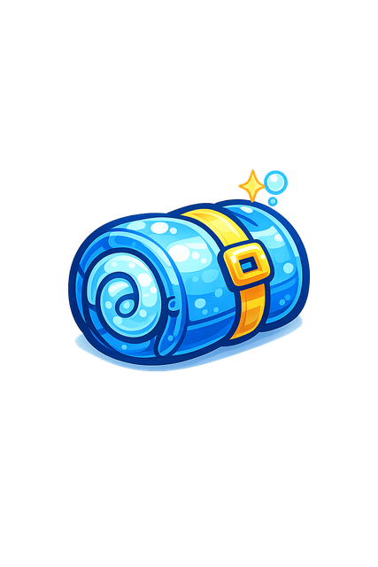
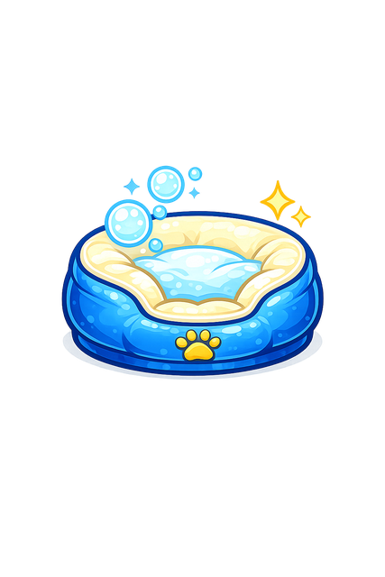
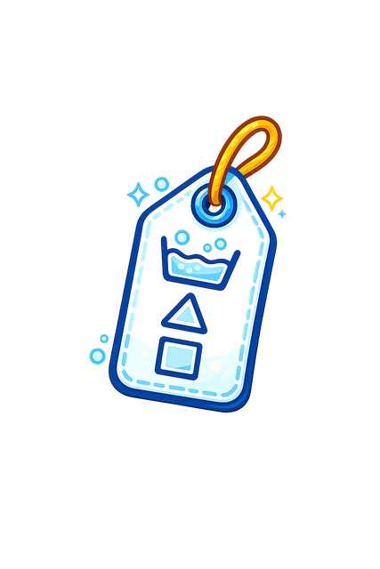
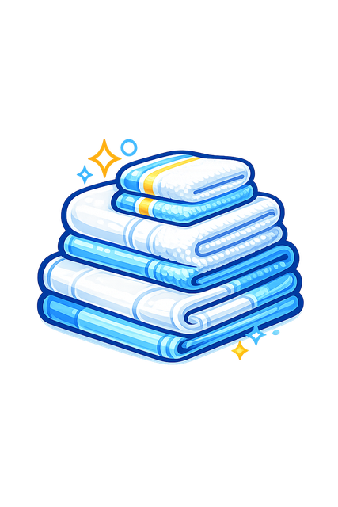
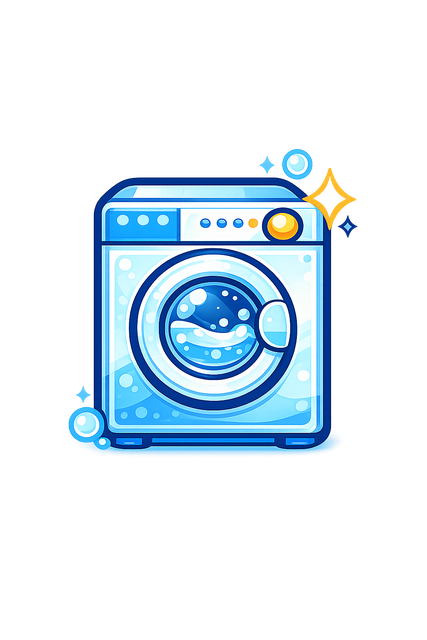
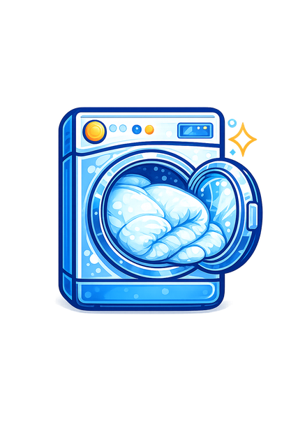
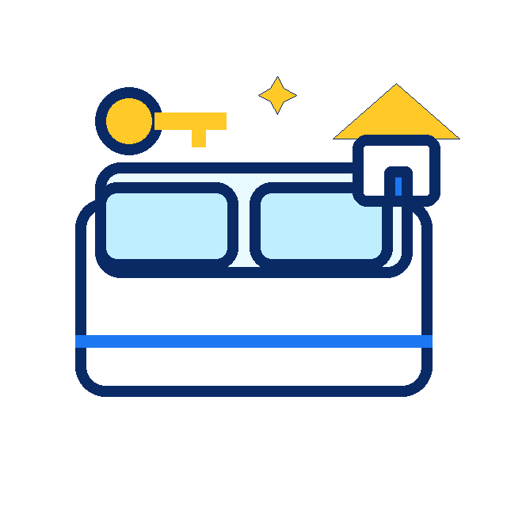

How to wash a comforter or duvet
A practical guide for deciding between home washing and a large laundromat machine.
Oversized & HouseholdRead guideResource pages should be genuinely useful first, then route readers to the right Laundry Station service when the store can help.
A practical guide for deciding between home washing and a large laundromat machine.
Oversized & HouseholdRead guideWhat to check before putting a rug in a washer, and when to ask first.
Oversized & HouseholdRead guide
A careful oversized-load guide for sleeping bags.
Oversized & HouseholdRead guide
Mechanical guidance without pest or health claims.
Oversized & HouseholdRead guideResidue, moisture, and washing habits explained plainly.
Self-ServiceRead guideA decision page that argues both sides honestly.
Wash & FoldRead guide
A reference page for washing, drying, bleaching, and ironing symbols.
Ironing & PressingRead guide
Frequency guidance for household laundry without overclaiming.
Wash & FoldRead guide
A walk-through for people who have not used a laundromat before.
Self-ServiceRead guide
How to think about washer capacity for bulky or everyday loads.
Self-ServiceRead guide
Operational laundry guidance for hosts with repeat turnover.
CommercialRead guideCommercial towel guidance without regulatory overreach.
CommercialRead guide